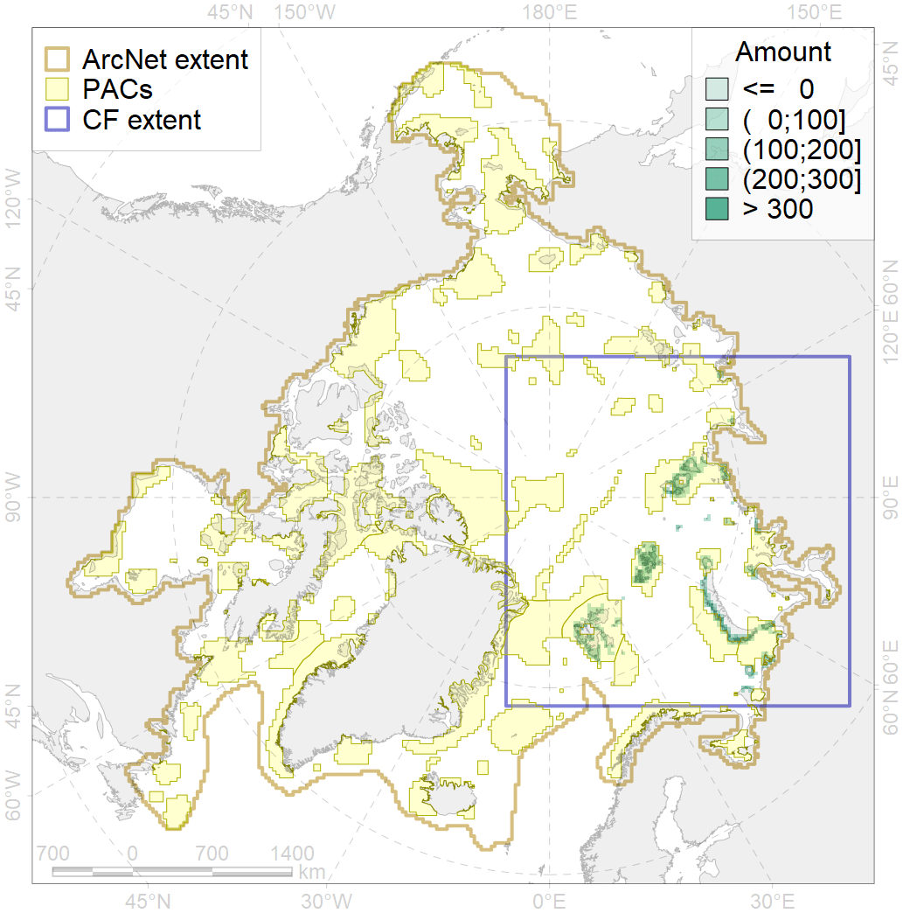
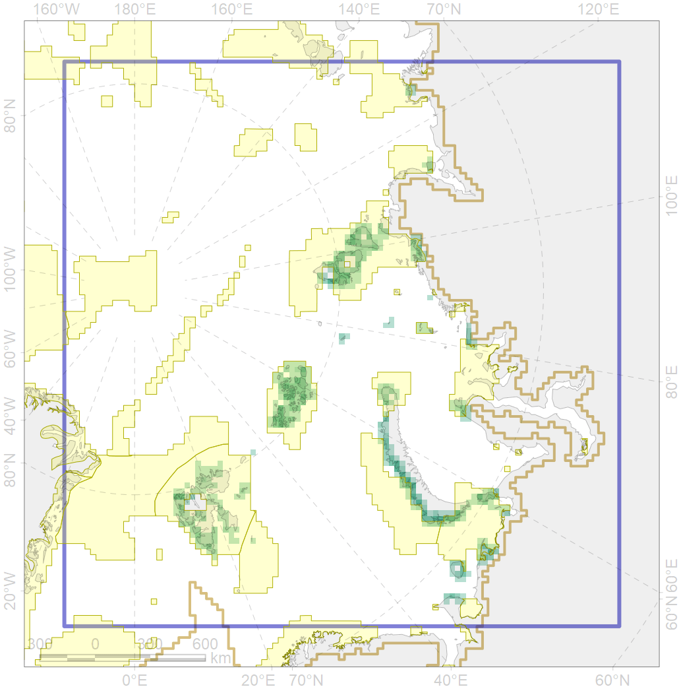

6028

| CF ID | 6028 |
| CF Name | Glaucous gull (Larus hyperboreus hyperboreus) breeding grounds |
| Time Period | 2013 |
| Source(s) | Petersen et al 2015 |
| Seasonality | April-September |
| Depth Horizon | ≥0 m |
| Methodology | Field Data |
| Author Name | Gavrilo, Tertitski |
| Notes | |
| Conservation Target Set in the Scenario | 0.12 |
| Conservation Target Achieved in the Scenario | 0.763 (Scenario: 635.8%) |
| PAC ID | Proportion in the PAC | Contribution to ArcNet Target Achievement | PAC’s Contribution to the Achieved Target |
|---|---|---|---|
| 12 | 0.5% | 4.4% | 0.7% |
| 13 | 0.8% | 4.5% | 0.7% |
| 14 | 22.1% | 161.6% | 25.4% |
| 15 | 0.4% | 2.5% | 0.4% |
| 16 | 1.9% | 15.2% | 2.4% |
| 19 | 2.2% | 18.1% | 2.8% |
| 20 | 11.2% | 86.5% | 13.6% |
| 21 | 2.5% | 16.7% | 2.6% |
| 22 | 24.1% | 200.6% | 31.6% |
| 23 | 0.1% | 0.4% | 0.1% |
| 30 | 12.1% | 98.8% | 15.5% |
| 31 | 0.1% | 0.5% | 0.1% |
| inner | 77.8% | 609.8% | 95.9% |
| outer | 22.2% | 26.0% | 4.1% |